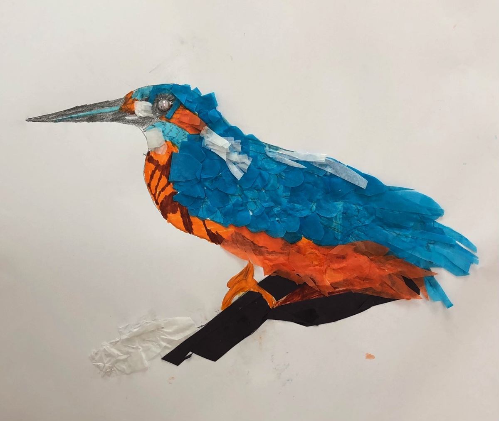

ESOL – Identity project at Artcore
Making work which is very personal to us
Fine artist who specialises in drawing and painting.
Making work which is very personal to us
Me and Evan.
National Lottery funded – at Park Lodge Project in Leicester.
Working with aged 16-24 group of homeless young people between October 2021 and July 2022.
A series of workshops, creative writing, music, photography and painting and drawing. Culminated in an in-house permanent exhibition
Workshops with a community group of regulars at Artcore.
An amazing bunch of young people, all working together to make this beautiful group work. Artcore.
Working with Horizons Sixth Form at Artcore.
5 weeks of exploring colour with paint, developing and having fun with techniques
Focusing on colour, really enjoyed teaching at ArtCore and we made some beautiful pieces and had a lot of fun.
The residents get inspired and decorate stones… getting crafty at YMCA Derbyshire!
At the Harrington Nursery in Derby – a teaching preschool who do amazing work with preschoolers.
Our crew from the YMCA in Derby took a grotty piece of land and transferred it into an amazing wildlife garden – and I helped the crew with the three stunning murals ❤️